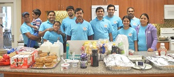
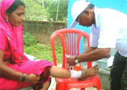
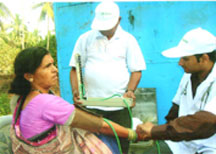
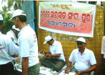

Recent News
January 2015
Volunteers of America Saraswata Sanngha will prepare and serve food to guests in Ronald McDonald House, Durham, North Carolina on January 3rd, 2015.
October 2014
Sponsored Brunch for guests at Ronald McDonald House, Durham NC, USA on October 18th, 2014. Twelve volunteers of America Saraswata Sangha served guests.
RM House Calendar October 2014
Acknowledgement
June 2014
Nilachal Saraswat Sangha provided medical assistance to devotees attending Rath Yatra festival in Puri, Odisha on June 2014; more than 200,000 devoteed joined the one day festival

February 2014
Nilachal Saraswat Sangha conducted Blood donation drive in 63rd Annual congregation (Pradeshik Bhakta Sammilani) held on February 23rd through 25th at Joda, Odisha
|